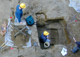

The Consulting Archaeology Program (CAP) conducts year round archaeological research and provides opportunities for students to gain experience in hands-on archaeology and employment. CAP assists state and federal agencies, as well as private developers in their environmental review process, a requirement for any federally-funded and licensed projects.
The role of CAP is to identify, evaluate and develop management plans for prehistoric and historic sites that may be affected by various types of construction such as highways, hydroelectric facilities and housing developments. In doing so, they are a major source of research on ancient and historical life in Vermont.
Learn more about CAP: Dr. John Crock, Director, Director of CAP and Associate Professor of Anthropology, University of Vermont, Consulting Archaeology Program, Delehanty Hall, Trinity Campus, 656-4310 or visit the CAP website.